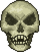
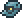

Preparation is important for this stage and the next stage of the game, so be careful.
Part Four: Skeletron and the Underworld Summoner | ||||
|---|---|---|---|---|
| The Deep End | It isn't a Castle | Boss Fight #3 | ||
After your last fight, your next step is to go to the underworld. The underworld is a dangerous place, but it's also where you'll find some of the most powerful items at the moment. |
After gearing up, your next priority should be taking down your next boss, Skeletron. He is located in the dungeon, though the keeper of the dungeon will tell you to come back when night falls. |
Skeletron is the third boss you will face, and he is composed of three entities. His head is the main component, though your attacks will be weakened before you take out his hands. |
||
Notable Items |
|||||
|---|---|---|---|---|---|
Molten Pickaxe |
|||||
Crafting |
|||||
20x Hellstone Bar  |
17x Hellstone Bar |
20x Obsidian |
|||
Notable Items [Expert/Master Mode] |
|---|
Expert Drop |
|  |
Notable NPCs |
|---|
|  |
Notable Bosses |
|
|---|---|